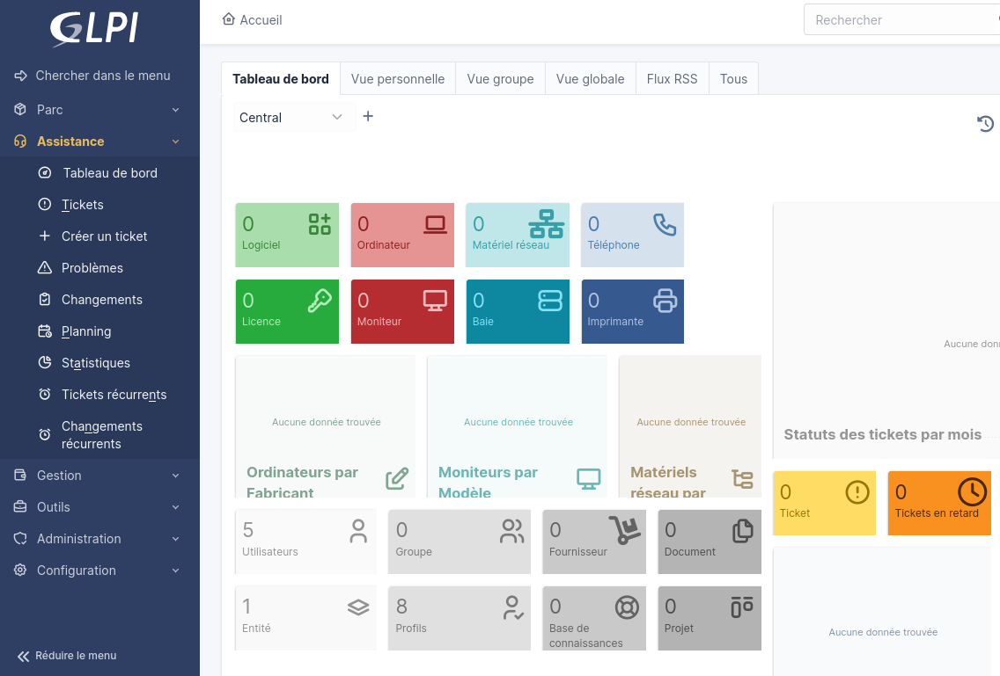

AP2 - Architecture trois-tiers
Pour l’AP2 en SLAM nous devions réaliser un serveur LAMP
On doit lier au LAMP une base de donnée MySQL et mettre en place un système de Gestion de Patrimoine Informatique avec GLPI et OCSInventory
Ce modèle où sont réunit LAMP, la base de données et la gestion du patrimoine se nomme une architecture trois-tiers.
